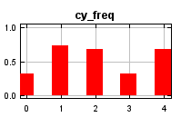
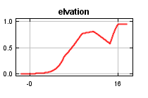
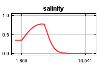
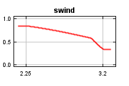
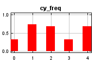
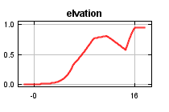
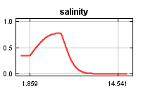
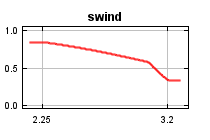

| Cumulative threshold | Cloglog threshold | Description | Fractional predicted area | Training omission rate |
|---|
| 1.000 | 0.032 | Fixed cumulative value 1 | 0.637 | 0.000 |
| 5.000 | 0.183 | Fixed cumulative value 5 | 0.446 | 0.043 |
| 10.000 | 0.322 | Fixed cumulative value 10 | 0.370 | 0.058 |
| 3.287 | 0.123 | Minimum training presence | 0.492 | 0.000 |
| 20.377 | 0.471 | 10 percentile training presence | 0.280 | 0.087 |
| 27.990 | 0.535 | Equal training sensitivity and specificity | 0.232 | 0.232 |
| 19.208 | 0.458 | Maximum training sensitivity plus specificity | 0.289 | 0.072 |
| 3.287 | 0.123 | Balance training omission, predicted area and threshold value | 0.492 | 0.000 |
| 5.072 | 0.186 | Equate entropy of thresholded and original distributions | 0.444 | 0.043 |


 






